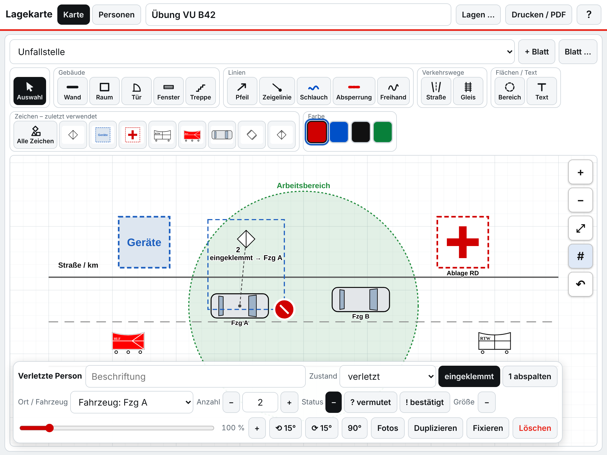
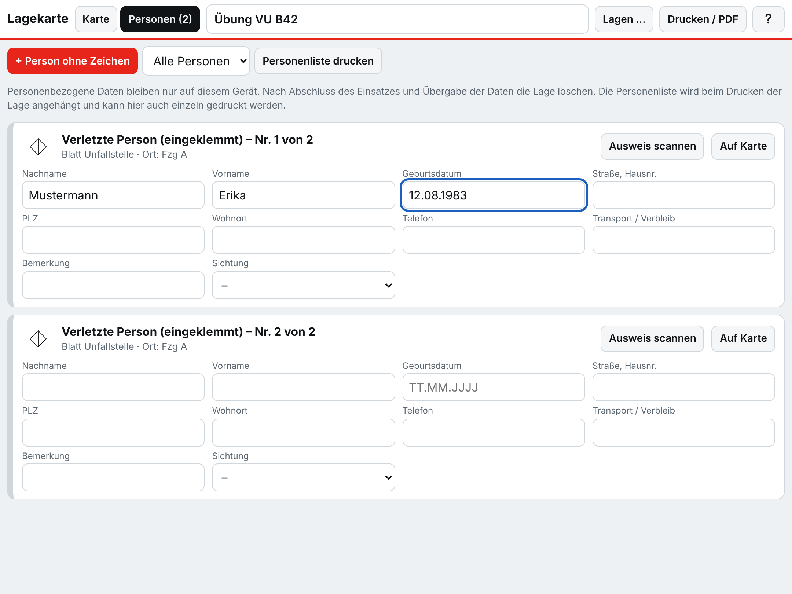

Skizzen- und Dokumentationswerkzeug für Einsatzlagen · iPad / Tablet / PC · Stand 26.11.2026

Oben Kopfzeile, darunter Blatt-Auswahl und gruppierte Werkzeugleiste, darunter die Karte. Unten das Eigenschaftsfeld des markierten Elements (hier: 2 Verletzte, eingeklemmt, Fzg A zugeordnet).
| Karte / Personen | Umschalten zwischen Lagekarte und Personenübersicht |
| Name der Lage | frei änderbar, z. B. „B3 Wohnungsbrand Hauptstraße“ |
| Lagen … | Lagen öffnen, neu anlegen, löschen, sichern, einlesen |
| Drucken / PDF | alle Blätter mit Tabellen, Fotos und Personenliste |
| ? | Hilfe in der App, Link zu dieser Anleitung |
| + Blatt / Blatt … | weiteres Blatt aus Vorlage, Blatt umbenennen, Hintergrund, Bild speichern, löschen |
| Gebäude | Wand, Raum aufziehen. Tür, Fenster rasten in Wände ein. Treppe |
| Linien | Pfeil, Zeigelinie (Zuordnung), Schlauch, Absperrung, Freihand |
| Verkehrswege | Straße und Gleis frei ziehen, Verlauf wird geglättet |
| Bereich | Kreis aufziehen, dann Art: Gefahren-, Absperr-, Arbeitsbereich; Form: Kreis/Rechteck. Liegt immer im Hintergrund |
| Text | Freitext, Farbe über „Farbe“ |
| Zeichen | „Alle Zeichen“ mit Suche, zuletzt verwendete direkt in der Leiste |
Personen · Führung · Gefahren/Brand · Schäden · Maßnahmen · Fahrzeuge · Einheiten · Einrichtungen · Wasserrettung · Gefahrgut (UN-Tafel) · Schiffe · Ablagen TH (Rettungsdienst, Geräte, Schrott) · Objekte (Pkw, Lkw, Bus, Lok, Wagen, Baum …) · Nordpfeil (Orientierung)
| Zustand | Person, vermisst, verschüttet, verletzt, tot, gerettet, zu transportieren, transportiert. Jede Umstellung wird mit Uhrzeit protokolliert |
| eingeklemmt | Zusatz, wird bei „gerettet“ aufgehoben |
| Anzahl / Status | Zahl unten links, „?“ vermutet, „!“ bestätigt |
| 1 abspalten | eine Person mit ihren Daten als eigenes Zeichen herauslösen |
| Ort / Fahrzeug | Zuordnung zu Fahrzeug, Schiff, Raum, Geschoss, Bereich oder Freitext |

Je Person eine Karte. Bei Anzahl > 1 erscheint jede Person einzeln.
| Lageplan | leeres Blatt |
| Grundriss / Schnitt | Außenwände mit Treppenraum bzw. Geschosse, Keller, Dach; Personen werden Geschossen zugeordnet |
| Gebäude | Schnitt und je Geschoss ein Grundriss nebeneinander |
| Straße / Kreuzung | für TH und VU |
| Bahnstrecke | 2 Gleise, Lok, Wagen, Oberleitung |
| Fluss / Rhein | Ufer, Buhnen, Fahrrinne, Fließrichtung |
| Wasserrettung Rhein | Ereignis-km, Zeit seit Ereignis, Fließgeschwindigkeit (Standard 3,0 m/s, 10 min). Abdrift-, Such- und Beobachtungssektor nach AEP mit Landmarken, Sektorenansage zum Kopieren, aktuelle Pegelwerte (PEGELONLINE). Wassertemperatur Pegel Köln = Anhaltswert; Fließgeschwindigkeit wird nicht gemessen |